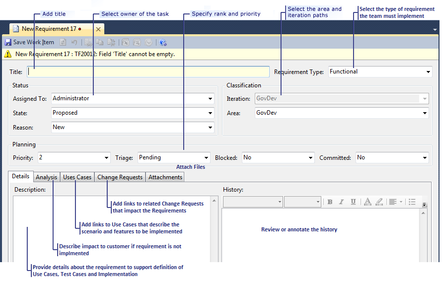

You can learn how to fill in the details of a requirement work item in this topic. A requirement communicates functionality that is of value to the customer of the product or system. Each requirement should briefly state what a user wants to do with a feature of the software and describe it from the user's perspective. For more information, see Planning the Project (CMMI).
For information about how to create this type of work item, see Work Items and Workflow (CMMI).
|
In this topic |
Related topics |
|---|---|
|
Process Guidance Workbooks Dashboards and Reports Field Reference |
Required Permissions
To view a requirement, you must be a member of the Readers group or your View work items in this node must be set to Allow. To create or modify a requirement, you must be a member of the Contributors group or your Edit work items in this node permissions must be set to Allow . For more information, see Managing Permissions.
 Defining
a Requirement
Defining
a Requirement
When you write a requirement, you should focus on who the feature is for, what they want to accomplish, and why. You should avoid descriptions that specify how the feature should be developed.
When you create a requirement, you must specify only the title and requirement Type (which is defaulted to 'Functional'). However, you can further define the Requirement by specifying a variety of other kinds of information, as the following illustrations show:
When you define a requirement, you must define the Title. You can leave all other fields blank or accept their default values.
To define a requirement
-
In the top section of the work item form, specify one or more of the following types of information:
-
In Title (required), type a short description.
Good Requirement titles reflect the value to the customer or functionality that the team must implement.
-
In Requirement Type, click the type of requirement that you are defining.
The default value is Funtional.
-
In the Assigned To list, click the name of the team member who owns the Requirement.
 Note
Note
You can assign work items only to members of the Contributors group.
If you leave the requirement unassigned, it is automatically assigned to you.
-
In the State list, leave the default value, Proposed. In the Reason list, leave the default value, New.
For more information about the State field and how you use it to track workflow, see Changing the State of a Requirement later in this topic.
-
In the Area and Iteration lists, click the appropriate area and iteration.
Note
The project administrator for each team project defines area and iteration paths for that project so that the team can track progress by those designations. For more information, see Create and Modify Areas and Iterations.
-
In the Priority list, click the level of importance for the Requirement on a scale of 1 (most important) to 4 (least important).
-
In the Triage list, click the triage substate.
Valid values are Pending (default), More Info, Info Received, and Triaged . This field identifies a level of triage for requirements that are in the Proposed state.
-
In the Blocked list, click Yes if an issue is blocking progress toward the implementation of the Requirement.
-
In the Committed list, click Yes if a commitment has been made to implement the Requirement.
-
-
On the Details tab, describe the requirement and the criteria that the team will use to verify whether it has been fulfilled.
You should provide as much detail as necessary to ensure that a developer can implement the Requirement and that a tester can test the requirement.
Your team will use this information to create work items for use cases, tasks and test cases. For more information, see Task (GovDev) and Test Case (GovDev).
-
On the Analysis tab, describe the impact to the customer if the requirement is not implemented.
You might want to include details on the Kano model about whether this Requirement is in the Surprise, Required, or Obvious categories.
-
On the Use Cases and Change Requests tabs, you can create links from the requirement to related use cases and change requests.
On the Attachments tab, you can attach specifications, images, or other files that provide more details about the Requirement to be implemented.
For more information, see the following sections later in this topic:
-
Click
 Save Work Item. Note
Save Work Item. Note
After you save the requirement, the identifier appears in the title under the work item toolbar.
Linking
a Requirement to Other Work Items
By creating relationships between requirements and other work items, you can plan projects more effectively, track dependencies more accurately, view hierarchical relationships more clearly, and find relevant information more quickly. From the work item form for a Requirement, you can create a work item that is automatically linked to the Requirement, or you can create links to existing work items.
You use the Use Cases, and Change Requests tabs to create links for specific types of work items and specific types of links. For more information about the restrictions for each tab, see Linking Work Items (GovDev).
|
|
|---|
|
The Requirements Traceability and Requirements Progress reports require that you create links between requirements and use cases. |
To create a use case and link it to a requirement
-
Open the work item form for the requirement, and click the Use Cases tab and then click
 New.
New. The Add new Linked Work Item dialog box opens.
-
In the Link Type list, leave the default value of Child as it is the only choice for linking of a use case.
-
In the Work Item Type list, leave the default value of Use Case as it is the only allowed choice.
-
In Title, type a short but specific description of the work to be performed.
-
(Optional) In Comment, type additional information, and then click OK.
A work item form for the use case opens with the information that you have provided.
-
Specify the remaining fields as described in Use Case (GovDev).
-
Click
Save Work Item. - Use a similar apporoach to create and link a change request to the requirement.
Adding
Details and Attachments to Requirements
You can add details to requirements in the following ways:
-
On the Details tab, type information in the Description field or the History field.
-
Attach a file.
For example, you can attach an e-mail thread, a document, an image, a log file, or another type of file.
-
Add a hyperlink to Web site or to a file that is stored on a server or a Web site.
To add details to a Requirement
-
Click the Details tab, and, in History, add comments that you want to capture as part of the historical record.
Every time that a team member updates the work item, its history shows the date of the change, the team member who made the change, and the fields that changed.
You can format information to provide emphasis or capture a bulleted list. For more information, see Titles, IDs, Description, and History (GovDev).
-
Click
Save Work Item.
To attach a file to a Requirement
-
On the Attachments tab, perform one of the following actions:
-
Drag a file into the attachment area.
-
Copy a file, and then click
 or press CTRL-V to paste it.
or press CTRL-V to paste it. -
Click
 Add, and then click Browse. In the
Attachment dialog box, type the name or browse to the file
that you want to attach.
Add, and then click Browse. In the
Attachment dialog box, type the name or browse to the file
that you want to attach. (Optional) In the Comment box, type more information about the attachment.
To close the Attachment dialog box, click OK.
-
-
Click
Save Work Item.
Changing
the State of a Requirement
A team can track the progress of a requirement by setting its State field to one of the following values:
When you create a requirement, it is in the Proposed state by default. When the team accepts a requirement for the current iteration, the team moves the work item to the Active state and creates tasks to implement it. When the team completes the Tasks and system tests show that the team has successfully implemented the requirement, the team moves it to the Resolved state. Finally, when the team validates the requirement, the team moves it to the Closed state.
Any team member can change the state of a requirement.
For more information about the data fields that you can use to track work item states, see Assignments and Workflow (GovDev).
To change the state of a requirement
-
Open the work item form for the requirement.
-
In the State list, click Active, Resolved or Closed.
-
If you change the state from Proposed to Active, the Reason field automatically changes to Accepted.
-
If you change the state from Active to Resolved , the Reason field automatically changes to Code Complete and System Test Passed.
-
If you change the state from Resolved to Closed, the Reason field changes to Pass Validation Test.
-
If you change the state from Active to Closed , you should click an option that matches your intent in the Reason list.
Valid options are Split (default), Abandoned , and Out-of-Scope.
-
-
Click
Save Work Item.
|
Typical workflow progression:
Atypical transitions:
|
Requirement State Diagram  |
Proposed (New)
The following data fields are automatically captured when a team member creates a requirement:
-
Created By: Name of the team member who created the requirement.
-
Created Date: Date and time when the requirement was created, as recorded by the server clock.
From Proposed to Active
A team member can change the state of a requirement from Proposed to Active for the reasons that the following table describes:
|
Reason |
When to use |
Additional actions to take |
|---|---|---|
|
Accepted |
When the triage committee approves the requirement for implementation in the current iteration. |
Assign the requirement to the team member who will implement it. |
|
Investigate |
When the triage committee determines that the team must investigate the customer impact before the committee will decide whether the team should implement the requirement. |
Return the requirement to the Proposed state when the investigation is complete. |
The following data fields are captured when a team member changes the state of a requirement to Active:
-
Activated By: Name of the team member who activated the requirement.
-
Activated Date: Date and time when the requirement was activated, as recorded by the server clock.
-
State Change Date: Date and time when the state of the requirement was changed.
From Proposed to Closed
A team member can close a requirement that is in the Proposed state because of the reason that the following table describes:
|
Reason |
When to use |
Additional actions to take |
|---|---|---|
|
Rejected |
When the triage committee determines that the team cannot implement the requirement or the customer no longer needs it. |
None. |
The following data fields are captured when a team member closes a Requirement:
-
Closed By: Name of the team member who closed the Requirement.
-
Closed Date: Date and time when the Requirement was closed, as recorded by the server clock.
-
State Change Date: Date and time when the state of the Requirement was changed.
Active
The team should implement only those requirements that are in the Active state. For active requirements, team members should create tasks for writing code, testing, and documenting the requirement. When all tasks are complete, the requirement moves to the Resolved state. A team member can also close a requirement if it is split, abandoned, or determined to be out of scope.
From Active to Resolved
A team member can resolve an active requirement for the reason that the following table describes:
|
Reason |
When to use |
Additional actions to take |
|---|---|---|
|
Code Complete and System Test Passed |
When the team checks in code to implement a requirement and all system tests have passed. |
Assign the requirement to the team member who will test it. |
The following data fields are captured when a team member resolves an active requirement:
-
Resolved By: Name of the team member who resolved the requirement.
-
Resolved Date: Date and time when the requirement was resolved, as recorded by the server clock.
-
State Change Date: Date and time when the state of the requirement was changed.
From Active to Closed
A team member can close an active requirement because of one of the reasons that the following table describes:
|
Reason |
When to use |
Additional actions to take |
|---|---|---|
|
Split (default) |
When the requirement is too large or needs more precise definition. |
Create one or more additional requirements, and link to them from the original requirement. The new requirements should be accepted as Active. |
|
Abandoned |
When the team no longer needs to implement the requirement. |
None. |
|
Out of Scope |
When the team has insufficient time to implement the requirement for the current iteration or has discovered blocking issues. |
Specify in which iteration the Requirement might be implemented. If the requirement is deferred to the next release of the software, leave the Iteration field blank, but describe in detail why the requirement was deferred and when the team should implement it. |
The following data fields are captured when a team member closes an active requirement:
-
Closed By: Name of the team member who closed the requirement.
-
Closed Date: Date and time when the requirement was closed, as recorded by the server clock.
-
State Change Date: Date and time when the state of the requirement was changed.
From Active to Proposed
A team member can change the state of an active requirement to Proposed because of one of the reasons in the following table:
|
Reason |
When to use |
Additional actions to take |
|---|---|---|
|
Postponed |
When the team will not implement the requirement in the current iteration but might in a future iteration. |
None. |
|
Investigation Complete (default) |
When the team has investigated the requirement and is resubmitting it for triage. |
None. |
The following data fields are captured when a team member closes an active requirement:
-
Changed By: Name of the team member who changed the state of the requirement.
-
State Change Date: Date and time when the state of the requirement was changed.
Resolved
After a requirement has been implemented in code and passes system tests, the lead developer sets its state to Resolved and assigns the requirement to a tester. The tester then validates whether it has been implemented according to customer expectations. If it has, the tester closes the requirement. If it has not, the tester reactivates it for further work.
From Resolved to Closed
A team member can close a resolved requirement for the reason that the following table describes:
|
Reason |
When to use |
Additional actions to take |
|---|---|---|
|
Validation Test Passed |
When the requirement passes all validation tests that are associated with it. |
Assign the requirement to the product owner. |
The following data fields are automatically captured when a team member closes a resolved requirement:
-
Closed By: Name of the team member who closed the requirement.
-
Closed Date: Date and time when the requirement was closed, as recorded by the server clock.
-
State Change Date: Date and time when the state of the requirement was changed.
From Resolved to Active
A team member can reactivate a resolved Requirement for the reason that the following table describes:
|
Reason |
When to use |
Additional actions to take |
|---|---|---|
|
Validation Test Failed |
When the validation test indicates that the requirement does not meet one or more customer expectations. |
Document the problems as bugs, and assign the requirement to the lead developer. |
The following data is automatically captured when a team member reactivates a resolved requirement:
-
Activated By: Name of the team member who reactivated the requirement.
-
Activated Date: Date and time when the requirement was reactivated, as recorded by the server clock.
-
State Change Date: Date and time when the state of the requirement was changed.
Closed
The team should no longer work on any requirement that has been closed because it was rejected or successfully implemented, verified, and validated.
The team can reactivate a closed requirement if it comes back into scope. Usually a business analyst or program manager reactivates a closed Requirement.
From Closed to Active
A team member can reactivate a closed requirement for the reasons that are described in the following table:
|
Reason |
When to use |
Additional actions to take |
|---|---|---|
|
Reintroduced in Scope |
When resources have become available to implement the requirement. |
Make sure that the implementation tasks, test cases, and details that have been defined for the requirement are complete and up to date. |
|
Closed in error |
When a requirement was accidentally closed. |
Make sure that the implementation tasks, test cases, and details that have been defined for the requirement are complete and up to date. |
The following data is automatically captured when a team member reactivates a closed requirement:
-
Activated By: Name of the team member who reactivated the requirement.
-
Activated Date: Date and time when the requirement was reactivated, as recorded by the server clock.
-
State Change Date: Date and time when the state of the requirement work item was changed.